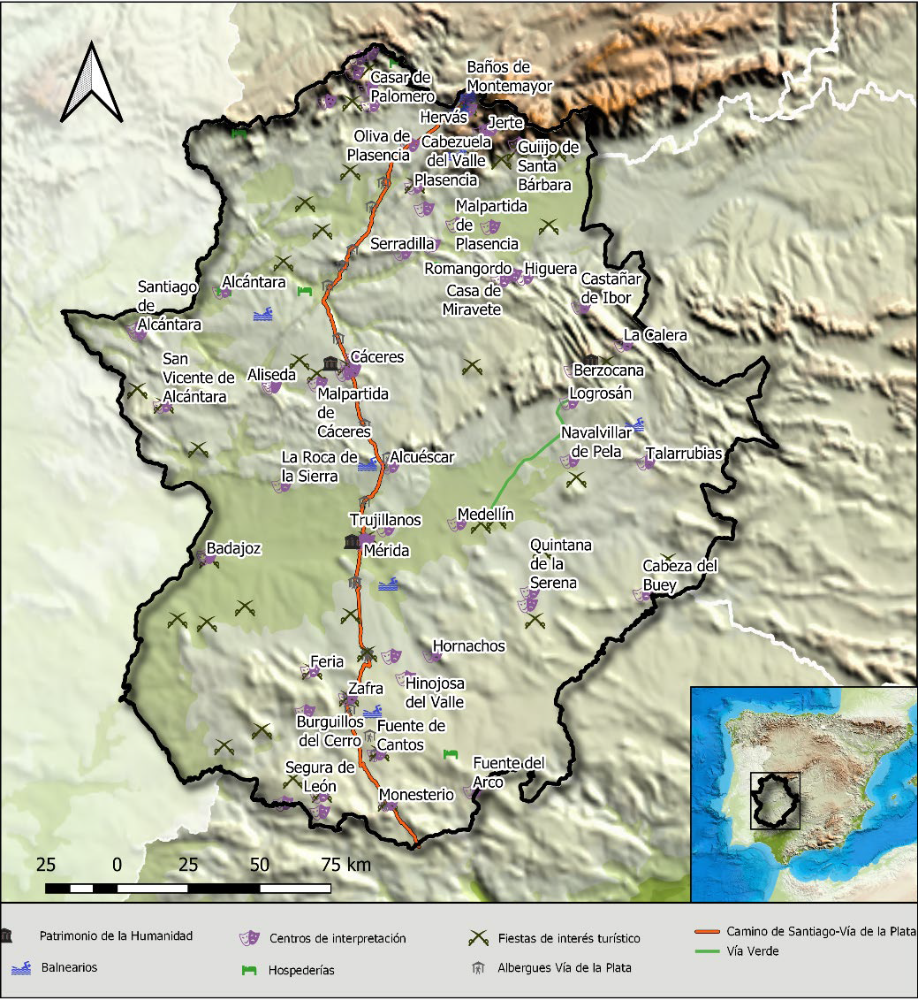

La cartografía temática se centra en la representación de un tema o fenómeno específico en un mapa.
Por ejemplo: mapas del clima, mapas de población, mapas de vegetación.
- Diferencia con los mapas generales:
Un mapa general (como los políticos o físicos) muestra una visión completa del terreno.
Un mapa temático se especializa en un tema concreto, usando datos y elementos visuales para transmitir información.
|  |